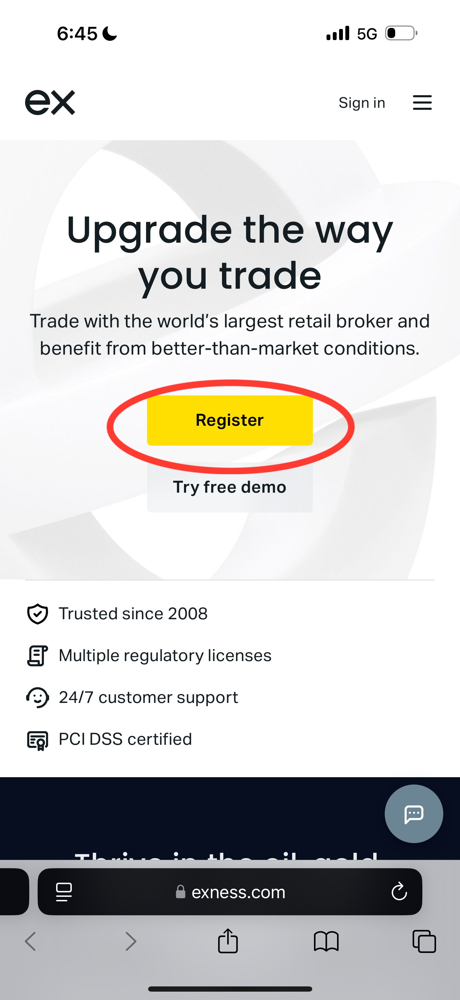
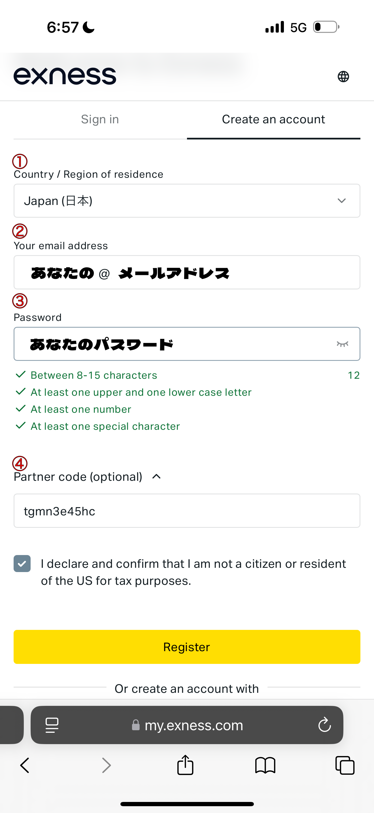
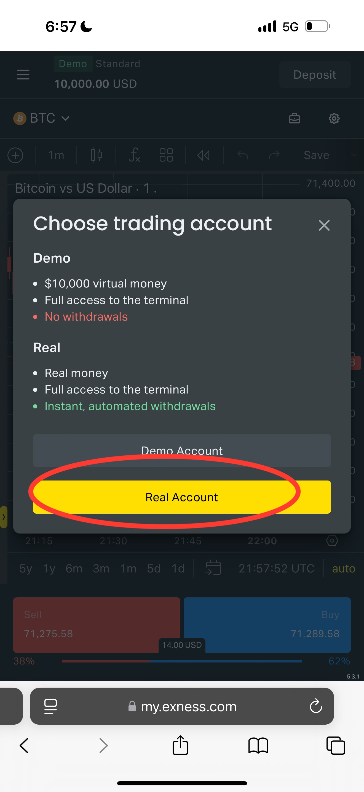
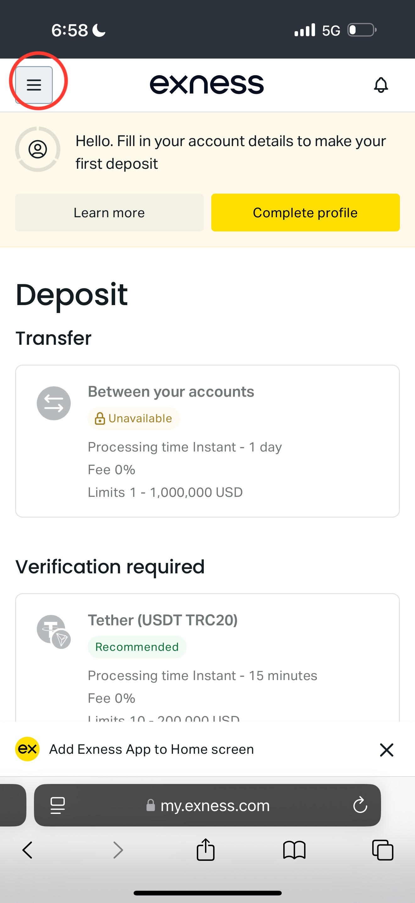
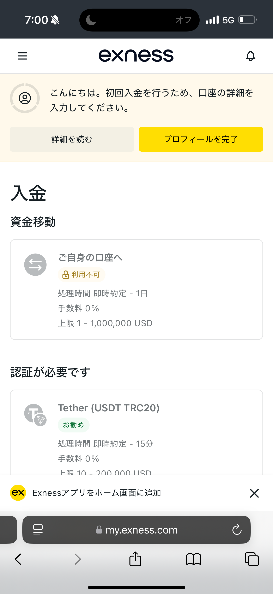

無制限レバレッジと極狭スプレッドを誇る世界最高峰ブローカーの始め方
まずはExnessの公式サイトにアクセスします。
画面中央に表示されている黄色の「Register（登録）」ボタンをタップして、アカウント作成画面へ進みます。

登録フォームが表示されたら、上から順番に情報を入力していきます。
tgmn3e45hc）がある場合はこちらに入力します。最後に、米国市民ではないことを確認するチェックボックス（I declare and confirm...）にチェックを入れ、「Register」をタップします。

アカウントの作成が完了すると、取引口座の選択画面がポップアップで表示されます。
実際の資金を入金してトレードを始めるために、「Real Account（リアル口座）」を選択してください。

マイページ（ダッシュボード）が表示されます。
初期状態では英語表記になっているため、画面左上の「≡（ハンバーガーメニュー）」をタップしてサイドメニューを開きます。
メニューが開いたら、リストの中にある「地球儀マーク（言語設定）」または「Language」という項目を探してタップし、言語一覧の中から「日本語」を選択してください。

設定が反映されると、画面が日本語に切り替わります。
「入金」や「ご自身の口座へ」といった日本語表記になっていれば設定完了です！
引き続き、画面の指示に従ってプロフィール（本人確認手続き）を完了させることで、実際の入金とトレードが可能になります。
